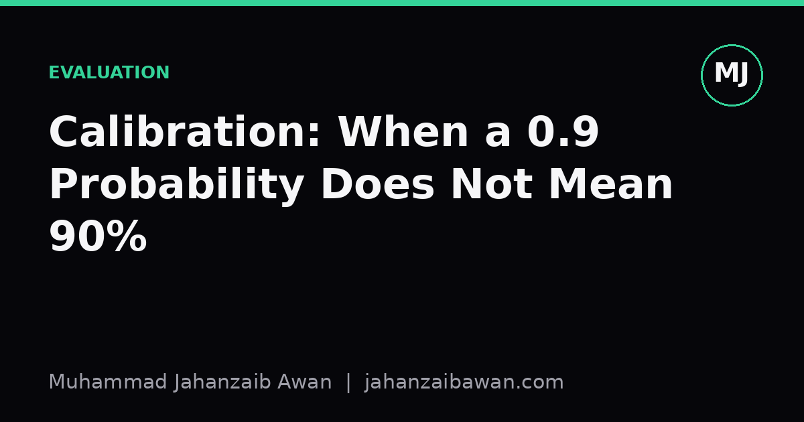

Calibration: When a 0.9 Probability Does Not Mean 90%
A model that outputs 0.9 is not necessarily right nine times out of ten. Here is why calibration is a separate property from accuracy, and how to check for it properly.

Why this trips people up
Most people treat a model's output as if it were a probability in the everyday sense. If a classifier says a patient has a 0.9 chance of a positive diagnosis, or a fraud model says a transaction has a 0.9 chance of being fraudulent, the natural reading is: out of every ten cases like this, nine will turn out to be true. That reading is intuitive, useful, and very often wrong. The number the model outputs is a score that has been squashed into the zero to one range by a softmax or sigmoid, and there is no law of nature guaranteeing that this score behaves like a frequency.
This matters because probabilities are frequently used as decision inputs beyond the raw classification. A clinician might act differently on a 0.55 versus a 0.95. A risk system might only escalate cases above a certain confidence threshold. A downstream model might combine several probabilistic outputs assuming they are on the same, honest scale. If the underlying scores are systematically too confident or too timid, every one of these downstream decisions inherits the distortion, often silently, because accuracy alone will not reveal the problem.
I want to be precise about the distinction, because it is easy to blur. Accuracy asks: did the model pick the right class. Calibration asks a different question: among all the times the model said 0.9, how often was it actually right. A model can have excellent accuracy and terrible calibration, and it can also have mediocre accuracy but be perfectly calibrated. These are separate axes of quality, and evaluating only one of them gives a false sense of security about the other.
A worked intuition with concrete numbers
Suppose we build a binary classifier and we gather every prediction where the model output was close to 0.9, say between 0.85 and 0.95. Imagine there are 200 such predictions in our test set. If the model is well calibrated, roughly 180 of those 200 cases should turn out to be positive, since 0.9 of 200 is 180. Suppose instead we count and find only 140 were actually positive, which is 70%. That is a calibration gap of about 20 percentage points at this confidence level. The model is overconfident: it says 90% when reality is closer to 70%.
Now consider what happens across the whole range of scores, not just one bucket. We can bin all predictions into buckets, for instance 0 to 0.1, 0.1 to 0.2, and so on up to 0.9 to 1.0, and within each bucket compute the average predicted probability versus the observed fraction of positives. If we plot average predicted probability on the x-axis and observed frequency on the y-axis, a perfectly calibrated model traces the diagonal line where x equals y. A model whose points sit consistently below the diagonal at high confidence, like our 0.9 bucket example, is overconfident there. A model whose points sit above the diagonal is underconfident, meaning it undersells its own accuracy.
This binned view is exactly what a reliability diagram shows, and it is one of the most useful diagnostic plots in applied machine learning because it exposes exactly where on the probability scale the model's honesty breaks down. It is common to see overconfidence concentrated at the extremes, near 0 and near 1, because many training objectives push scores toward the boundaries even when the underlying evidence does not fully justify it. It is also common to see the pattern differ across subgroups of the data, which is a separate and important concern I will return to later.

Why modern models are often overconfident
A recurring pattern, observed across many types of classifiers, is that increasing model capacity and training for longer often increases accuracy while simultaneously making the model more overconfident. The reason is not mysterious once you think about the training objective. Cross entropy loss keeps rewarding the model for pushing the correct class's probability closer to 1, even long after the decision boundary has effectively been learned. There is no explicit term in the loss that says stop once your confidence matches your actual error rate; the objective just keeps sharpening.
Regularisation choices interact with this too. Techniques that constrain model flexibility, like weight decay or early stopping, can incidentally improve calibration as a side effect of preventing scores from being pushed to the extremes, even though they were not designed with calibration in mind. Conversely, training for many epochs past the point of best validation loss, chasing marginal accuracy gains, often quietly worsens calibration even as the headline accuracy metric looks stable or slightly improves.
Class imbalance compounds the problem. If a positive class makes up only 5% of the data, a model can achieve strong overall accuracy by being cautious, yet when it does commit to a confident positive prediction, that confidence is often poorly calibrated because there were so few positive examples to learn the true shape of the probability surface from. In practice this means the rarer the outcome you are modelling, the more scepticism your probability outputs deserve until you have specifically checked them.
Measuring calibration properly
The reliability diagram is a good visual tool, but for comparing models or tracking calibration over time you want a single number. Expected calibration error, often abbreviated ECE, takes the binned approach from before and computes a weighted average of the absolute gap between predicted confidence and observed accuracy across bins, weighted by how many predictions fall in each bin. A smaller ECE means the reliability diagram hugs the diagonal more closely. It is a genuinely useful summary statistic, but it hides where the miscalibration occurs, which is why I always look at the diagram alongside the number rather than instead of it.
The Brier score is another option, essentially the mean squared error between predicted probabilities and the actual binary outcomes, treating the outcome as 0 or 1. It rewards both calibration and sharpness, meaning a model can lower its Brier score either by being better calibrated or by being more decisively correct, so it conflates two things that are useful to keep separate when diagnosing a specific problem. Log loss has a similar property and additionally punishes confident wrong answers extremely harshly, which is worth knowing before you use it as your only headline metric.
Whatever metric you choose, the evaluation split matters enormously and this is where I get strict. Calibration must be assessed on data the model has not seen during training or during any calibration fitting step, using the same leakage-aware discipline you would apply to any other performance claim. If your calibration set overlaps with training data, or if there is any temporal or group-level leakage between splits, the reliability diagram will look better than reality, for exactly the same reasons an inflated accuracy number would.

Fixing miscalibration without retraining everything
The encouraging news is that you usually do not need to retrain the underlying model to fix calibration. A common and effective approach is to fit a small, separate calibration step after training, using a held-out set that was not used to fit the original model. Platt scaling fits a simple logistic regression on top of the model's raw scores, learning a scaling and shifting transformation that pulls overconfident scores back toward the diagonal. It is cheap, works well when the miscalibration follows a roughly consistent pattern across the score range, and requires very little additional data.
Isotonic regression is a more flexible alternative that fits a non-decreasing step function mapping raw scores to calibrated probabilities, rather than assuming a fixed logistic shape. It can correct more irregular miscalibration patterns, such as a model that is overconfident in the middle of the range but reasonably calibrated at the extremes, though it needs a bit more calibration data to avoid overfitting to noise in that held-out set.
Either approach requires a clean split: one portion of data to train the original model, a separate portion to fit the calibration transform, and a third, untouched portion to evaluate the final calibrated probabilities. Skipping the third split and evaluating on the same data used to fit the calibration transform will make the calibration look better than it will be in production, which defeats the entire purpose of doing this carefully in the first place.
Calibration across subgroups, not just on average
A model can look well calibrated overall while being badly miscalibrated within specific subgroups, and this is one of the more consequential blind spots in practical deployments. Suppose a model is well calibrated for one demographic group but overconfident for another, and the first group is simply larger in the test set. The aggregate reliability diagram will look fine because the well behaved majority group dominates the average, while the smaller group is quietly receiving unreliable probability estimates.
The practical fix is to compute reliability diagrams and calibration metrics separately for the subgroups that matter for your application, whenever you have a defensible reason to believe the error patterns might differ across them. This is more work, and it requires enough examples per subgroup for the bins to be meaningful rather than noisy, but skipping it means shipping a model whose stated confidence is only trustworthy for part of the population it serves.
The practical takeaway
A predicted probability is a claim, not a fact, and like any claim it deserves to be checked against evidence rather than taken on faith because it came out of a well-performing model. Before you let a 0.9 output drive a decision, ask whether anyone has actually verified that predictions around 0.9 are correct roughly nine times out of ten on data the model has never touched. If nobody has checked, treat the number as a ranking signal that tells you this case is more likely than that case, rather than as a literal frequency.
My own working habit is simple: whenever a model's output feeds into a threshold, a resource allocation decision, or a downstream probabilistic calculation, I plot a reliability diagram on a properly held-out set before trusting the number, and I check subgroup behaviour if the stakes justify it. If the diagram bends away from the diagonal, I reach for Platt scaling or isotonic regression fitted on yet another clean split, and only then do I let the model's confidence scores do any real work. Accuracy tells you the model is often right. Calibration tells you whether you can believe it when it tells you how sure it is, and those are not the same question at all.